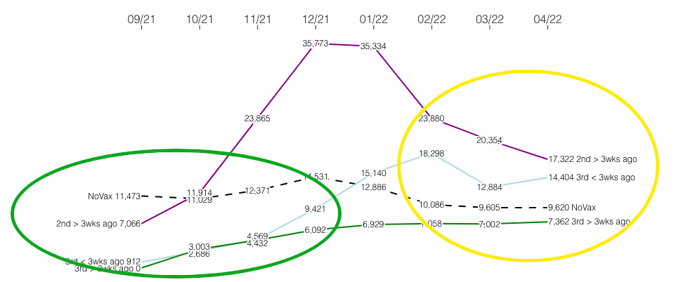

Covid mortality rates by vaccination status
Intro
Following graphs are, besides those on vaccine uptake, of data from ONS deaths by vaccination status, England - specifically Table 2: Monthly age-standardised mortality rates by vaccination status by age group for all cause deaths, deaths involving COVID-19 and deaths not involving COVID-19, per 100,000 person-years, England, deaths occurring between 1 January 2021 and 31 May 2022 in the version to 31st May edition. These graphs are ASMR/100k person-yrs means it is graphing Age Standardised Mortality Rate per 100 thousand person-years. NoVax refers to those not vaccinated against COVID-19, 2nd > 3 wks ago is those who had a 2nd dose but more than 21 days ago (the ONS denotes time since dose in days but I preferred < 3 wks ago to < 21d ago as a plain language compaction), likewise 3rd < 3 wks ago, and 3rd > 3 wks ago is those who had a 3rd dose or booster less than or more than 21 days ago.
Partial all cause mortality - 80-89yr olds - ASMR/100k person-yrs
This is a very partial view of the all cause mortality statistics which I am only showing to illustrate how one can start with a misleading graph and through understanding the statistics better see what the real situation is. So the following shows correctly that official statistics have the age standardised mortality rate (ASMR) per 100 thousand person-years (person-yrs - i.e. counting the number of people in that age group for the time period) as higher among those who have had two vaccine doses against COVID-19 (more than 3 weeks ago) or have had a 3rd or booster dose less than 21 days ago than those who have had no vaccine doses.
Figure 1
So why is it is misleading? First clue it might be strictly true but yet utterly misleading (and not proof of antivaxer conspiracy theories) is that it’s only a few months data.
The TLDR; for the impatient: yellow circle in image below is the above graph - the green circled data is what tells us that a simplistic antivax conclusion is not even supported by the same data series.

Figure 2
The second clue is looking at the confidence interval or confidence limits. For those who have not done inferential statistics: confidence limits rely on the data (such as the average height of people in a group) reasonably conforming to a mathematical model - then based on the known properties of that model and given a number of data points measured under the right conditions (a proper sample of e.g. people’s heights in a group) one can calculate the confidence interval or limits - this is the range of values that one is sure the real value of the number for the entire population of data points (e.g. the true average found if one measures everyone’s height in the group) lies within - on a specified number of occasions where one tries to measure data like this (e.g. trying to determine the average height of people in various groups such as countries or cities).
Or in words: given a sample the upper and lower 95% confidence limits for a statistic signifies: provided the data is a good fit to the model then in only 1 time in 20 would we expect the true value of the statistic to be above the upper confidence limit or below the lower limit. As an example: using the LA Lakers team ordered alphabetically by surname from the first 6 heights in a 17 member team I calculate a mean of 2.005 metres as the sample height with confidence limits of 1.906 and 2.105 - and the entire team does turn out to have a mean height of 2.003 metres (as at Wikipedia stats on 3rd Sept 2022). The 6 member sample based on surname is adequately random as we have no reason to believe players with surnames starting with B or C are going to be systematically taller or shorter than those with surnames starting with S or W.
Having understood that basic idea of a confidence limit here is ASMR and confidence limit data for December for the 3rd < 3 wks ago group of 80-89yr olds. With the all cause ASMR for the unvaccinated at 9.6k per hundred thousand in March and April note the lower confidence limit for 3rd < 3 wks ago is below that at 8.45k in March and not much above for April (10.2k). Note that in December the upper and lower confidence limits are within 10% of the calculated ASMR (it’s ~7%) - while the March and April ones are much wide (up to ~35% less on the lower limit and up to ~46%) more on the higher limit. When one notes the March and April statistics are based on less than 5% of the deaths and less than 3% of the person-years of all cause ASMR in December one gets an intuitive feels for why the March/April figures are a lot less certain with a lot wider confidence intervals than the December figure.
| Month | Count of deaths | Person-years | Age-standardised mortality rate / 100,000 person-years | Noted as Unreliable | Lower confidence limit | Upper confidence limit |
|---|---|---|---|---|---|---|
| Dec 2021 | 942 | 9777 | 9421.2 | 8815.9 | 10026.5 | |
| Mar 2022 | 27 | 201 | 12883.6 | 8451.6 | 18796.8 | |
| April 2022 | 39 | 262 | 14403.5 | 10202.0 | 19741.2 |
The third clue is looking at vaccine uptake statistics for the over 80s (the dark red line punctuated with triangles on the left of both the following graphs).
2nd dose uptake
3rd dose uptake
I.e. the thing to note from both those vaccine uptake graphs is that by the time Feb/Mar/April have rolled around the vast majority of people have taken a 2nd AND a 3rd dose - those 80-89yrs old getting vaccinated in Feb/Mar/April are the latecomers (and some are now unfortunately late in the sense of deceased).
What hypotheses might one have about elderly people who are unvaccinated or get vaccinated late?
- Given the overall evidence for vaccination one can say that those who get vaccinated late or at all perhaps don’t listen to their doctor - and this might mean they miss out on other evidence based treatments.
- Late vaccination might also be a sign of a lack of trust or social inclusion or a lack of care - e.g. people from an ethnic minority that has been mistreated, from people in poverty without access to information or from people outside of institutions - where they would have been included in an institutional vaccination program if they had been in the institution.
- For the unvaccinated it may mean rightly or wrong that they think they are healthier (either they correctly perceive their ability to survive an infection without a vaccine is better than average - or they are in denial).
- For those who are early or on time with vaccination one might hypothesis: social inclusion & trust, scientific literacy, economic privilege (the health and resources to travel if necessary to a vaccine appointment).
Together this might mean those who are late to vaccination face other health disadvantages compared to those who are vaccinated with the rest of their age group. And that the unvaccinated might be a healthier group compared to those who will take a vaccine (vaccine takers perhaps correctly perceiving either or both of the vaccine’s benefits and their personal vulnerability).
Conversely if the antivaxer theory was correct - in that vaccination was very harmful - then we might expect to see all cause mortality in the 3 wks after vaccination or in the vaccinated vs the unvaccinated to be elevated most of the time (supposedly bad vaccines not being a seasonal thing).
So we would expect if the antivaxer theory was true to see this elevated mortality among the recently vaccinated to be true across - or for it to disappear because those late to booster vaccination or just on two doses are different compared the unvaccinated and those who get vaccinated in a timely manner.
All cause mortality - 80-89yr olds - ASMR/100k person-yrs
Here is the all cause mortality for a longer period. Remember if one consults the 3rd or booster dose uptake graph above - by December those who have not have a 3rd dose or who only had it recently are the last quarter of the age group.
Figure 5
Looking at the early time period October, November, December it is clear that those vaccinated with a 3rd dose less than 21 days ago are not suffering a higher mortality rate! When it starts to rise is when a couple of things start to be true - 1) it is winter - never a good time for NHS healthcare 2) people in this group now comprise latecomers to vaccination - who for all the reasons above might be worse off in health and social status terms relatively speaking.
As to the ASMR rising much above that of the unvaccinated for those who have two doses - one can’t be sure (the above is a lot of hypotheses - hypotheses more reasonable than antivaxer conspiracy theories). However it may be that the unvaccinated 80-89yr olds are shaped by survivor bias - those who made it to this age and won’t take a vaccine are the ones who survived that kind of attitude for decades - and they are the hardy survivors. Whereas those who took a couple of doses both acknowledged their vulnerability and yet do not benefit from the more durable benefits of those who had the vaccine with most of their age group. To get a real answer and not hypotheses one would need to have individual level data, code for pre-existing conditions (perhaps tough if antivaxers won’t be screened medically), and then having matched for health status otherwise (along with obvious confounders like gender and class) see if that elevated mortality rate in the double vaccinated persists (the graph suggests it is seasonal).
Deaths involving COVID-19 - 80-89yr olds - ASMR/100k person-yrs
Figure 6
As one can see here folks with 3 vax doses are doing better at all times - often very significantly better. Note that the decline in vaccine effectiveness with time for the COVID-19 vaccinations is documented - e.g. page 10 here. So in the absence of proper controls one cannot draw strong conclusions about the rise of deaths among those who have been given 2 doses not 3 - one can just note they are an unusual population (like the unvaccinated) in terms of being latecomers. But it seems a bit firmer on the basis of these graphs alone - let alone the rest of the scientific literature - that if the vaccine really was terrible then the unvaccinated persistently having higher all cause mortality in the autumn would not be consistent with a vaccine being so terrible as to undo any health benefits of being part of a majority following scientific advice & social norms (which the lower mortality groups in the autumn might be seen to be doing generally).
These are deaths involving COVID-19 (not “due to COVID-19” which indicates it was the underlying cause in ONS terminology). From the definition sheet:-
For this analysis we define a death as involving COVID-19 if either of the ICD10 codes U07.1 (COVID-19, virus identified) or U07.2 (COVID-19, virus not identified) is mentioned on the death certificate. In contrast to the definition used in the weekly deaths released, deaths where the ICD10 code U09.9 (Post-COVID condition, where the acute COVID had ended before the condition immediately causing death occurred) is mentioned on the death certificate and neither of the other two COVID-19 codes are mentioned are not included, as they are likely to be the result of an infection caught a long time previously, and therefore not linked to the vaccination status of the person at date of death.
I take that definition to mean an infection characteristic of COVID but without a positive test - U07.2 (COVID-19, virus not identified) - or an infection with a positive test - U07.1 (COVID-19, virus identified) - on the death certificate is seen as relevant to a deaths by vaccination status - but not a previous infection - the acute phase of which might have ended months before.
Non COVID-19 deaths - 80-89yr olds
Figure 7
Deaths involving COVID-19 - 60-69yr olds - ASMR/100k person-yrs
Figure 8
This is a particularly important graph for using age standardised mortality rate. The drop in mortality seen among the unvaxed in 2022 vs in autumn 2021 does not mean the unvaxed dying such that the overall numbers of deaths decrease. While there will be a survivor bias over the long term the sharp decline seen - given the rate under Delta - seems a strong indicator of Omicron being rather milder than Delta.
Non COVID-19 deaths - 60-69yr olds - ASMR/100k person-yrs
Figure 9
Look at the 2nd & 3rd dose uptake graphs again if necessary. Because when the graph in Figure 9 is showing much higher death rates among those who have had only a 2nd dose or had a 3rd dose less than 21 days ago is a time when
- a) it is NHS during winter season
- b) those who had not had a 3rd dose or had only recently had it were not in the first half of the population to get vaccinated.
And outside an NHS winter period (March and April 2022) these are the only times (up to May 2022) when the ASMR is noted as unreliable in table 2. One can see this in the table below showing the 60 - 69yrs old who had a 3rd or booster dose less than 3 weeks ago by looking at the upper and lower confidence limit and the number of deaths and person-years the statistic is based on each month.
| Month | Count of deaths | Person-years | Age-standardised mortality rate / 100,000 person-years | Noted as Unreliable | Lower confidence limit | Upper confidence limit |
|---|---|---|---|---|---|---|
| December 2021 | 471 | 112682 | 455.2 | 412.9 | 497.5 | |
| January 2022 | 133 | 14774 | 1078.4 | 886.2 | 1270.7 | |
| April 2022 | 8 | 494 | 1823.9 | u | 765.2 | 3631.8 |
| May 2022 | 7 | 404 | 1801.3 | u | 688.6 | 3774.5 |
The lower confidence limit is below that of value in the graph for the vaccinated group in April and May 2022 (and upper limit is roughly double). By looking at the deaths and person-years one can see the values for December and January are based on over 600 deaths combined and over 126 thousand person-years of data. So if you believe the figures based on 7 or 8 deaths in a month and less than 500 person-years in that when there are statistics based on roughly 100 times more data - well that’s a choice - but I fail to see it is as good one. (There are of course some times when basing your statistic on a smaller number is the correct choice - XKCD cartoon number 795 is a joke about the misuse of statistics in the form of a statistic about deaths from lightning in the US population - among the majority of whom might be fairly sensible in storm - constrasting their risk with that of the much smaller band of people who misuse the same statistic to go outside in a lightning storm regardless of the risk).
Also around May: the issue non-COVID excess deaths which are seen to be elevated (and likely to due hospital bed issues)
As before, the peaks in ambulance-related harms broadly coincide with peaks in England’s non-Covid excess mortality.
It’s a grim picture, and an increasingly conclusive one. pic.twitter.com/6CZiaE8QZ4— John Burn-Murdoch (@jburnmurdoch) August 23, 2022
This means that the few folk in the age group who are only double vaccinated at that point migh both have sufficient medical need to be vaccinated that they were persuadable and insufficient social integration/resources/trust that they only ended up double vaccinated. So might have both more need of NHS services than others - and be less well served/integrated.
Deaths involving COVID-19 deaths - 60-69yr olds - ASMR/100k person-yrs
Figure 10
The above can be viewed with these three graphs below. In following graph one can deduce from the errorbars on the all cause mortality of folks who have had a 2nd dose that the group is getting smaller (as the errorbars are widening as the all cause mortality observed increases).

Figure 11
Page 82 in this report has 86.4% (2.519m) and 81.8%(2.869m) 65 to under 70yr olds and 60 to under 65yr olds with 3rd doses at 30th January 2022 - and by week ending 29th May 2022 those figures, page 64, are 86.5%(2.581m) and 82.3%(2.976m) - so moving half a percentage point - or 0.169 million people in the National Immunisation Management Service (NIMS) groups that total about 6.424m - i.e. about 2.6% of the 60-69yr olds on NIMS got vaccinated in February to May 2022 so the group comprising those who had a third dose in the last 3 weeks is an even smaller moving target. No wonder the error bars are enormous!

Figure 12

Figure 13